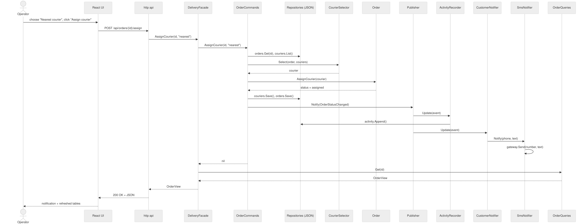
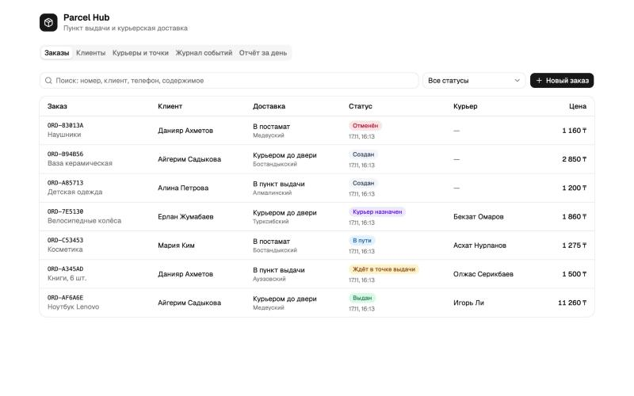
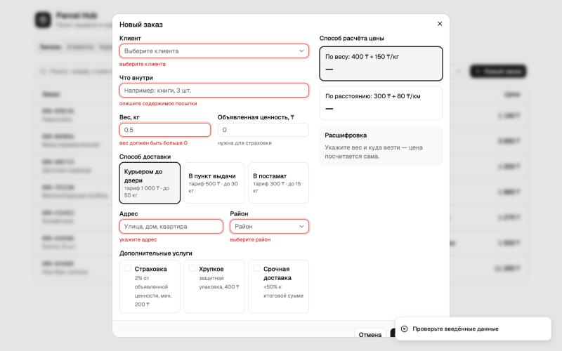
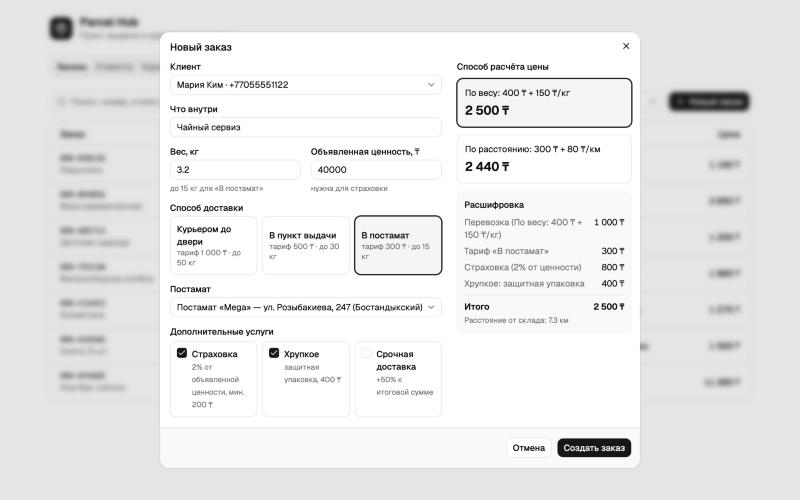
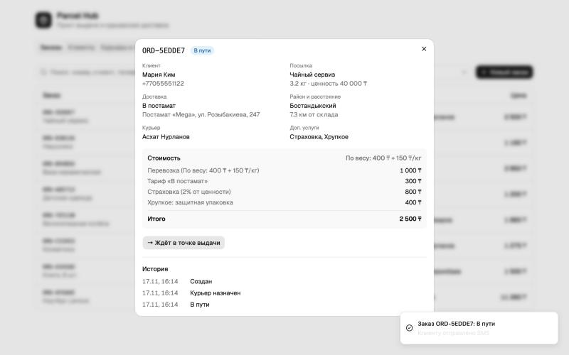
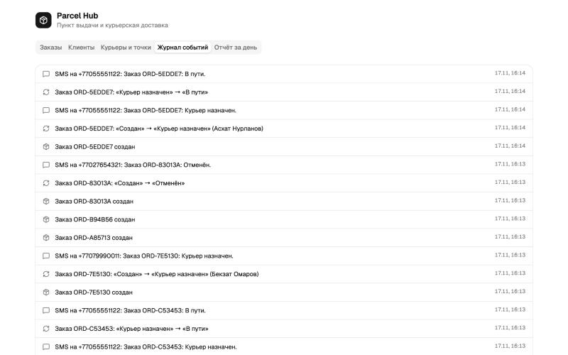
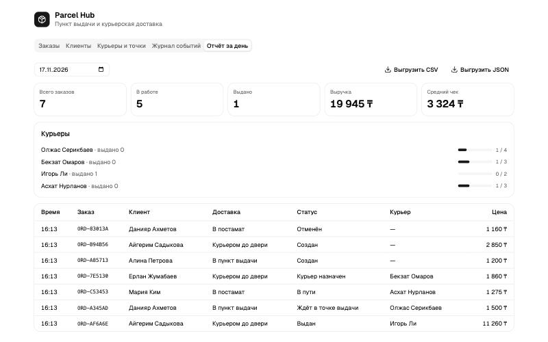

| Student | Ramazanov Nursultan Ramazanovich |
| Group | SE-2519 |
| Team | Individual project |
| Language | Go 1.25 (backend), React + TypeScript (UI) |
| Repository | https://github.com/qwavy/final-sdp |
| Date | November 2026 |
A parcel pickup point or a small courier service handles dozens of parcels every day. For each parcel the operator has to calculate the delivery price, choose a courier, track where the parcel is, tell the customer about changes, and at the end of the day know how many orders and how much money there were. Doing this in a spreadsheet is slow and error-prone: prices are calculated by hand, statuses are changed in the wrong order, and customers are not notified.
The operator of a pickup point or the dispatcher of a courier service.
Parcel Hub is a web application that supports the complete user journey required by the task:
net/http, encoding/json, testing).
All business logic and all design patterns are implemented here.| Entity | Meaning | Relations |
|---|---|---|
Order | Parcel delivery: description, weight, delivery method, extras, price, status, history | references Customer, Courier, PickupPoint |
Customer | Name and phone of the recipient | has many orders |
Courier | Name, phone, district, capacity (orders at the same time) | delivers many orders |
PickupPoint | Pickup point or parcel locker with an address | receives many orders |
Main business rules (all checked in the domain package):
| # | Scenario | Steps |
|---|---|---|
| 1 | Create an order | Orders → “New order” → fill the form → “Create order”. Invalid fields are highlighted. |
| 2 | Configure delivery and price | Choose delivery method, pickup point or address, extra services; compare the two prices calculated by different strategies and pick one. |
| 3 | Assign a courier | Open the order → choose “Nearest courier” or “Least loaded” → “Assign courier”. |
| 4 | Change status / cancel | Order card shows only allowed next statuses. Each change is logged and an SMS is sent to the customer. |
| 5 | Daily report | “Daily report” tab → totals, couriers’ load, list of orders → export to CSV or JSON. |
| 6 | Edit or delete an order | A new order can be edited (price is recalculated) or deleted. |
| 7 | Manage customers and couriers | Create, edit, delete; deleting someone with active orders is refused. |
| 8 | View activity log | “Activity log” tab shows every event and every SMS sent. |
The backend follows hexagonal architecture (ports & adapters) with CQS (command–query separation) in the application layer.
DeliveryFacade; use_cases/command (change data);
use_cases/query (read data); events (Observer); port (interfaces).storage — JSON files; notify — SMS gateway (Adapter).adapters → application → domain. The domain imports nothing from other layers.Repository[T],
Notifier, ExportStore. Adapters implement them. This is why storage or SMS can be replaced,
and why tests can use a fake notifier.OrderCommands, CustomerCommands, CourierCommands) change
data and return only an error (or the new ID). Queries (OrderQueries, DirectoryQueries) only read
and build “views” for the UI.cmd/server/main.go is the only place where all layers meet.422 with errors per field; rule violation → 409;
not found → 404; malformed JSON or date → 400.POST /api/orders/{id}/status
→ http handler reads JSON
→ DeliveryFacade ChangeOrderStatus(id, status)
→ OrderCommands Get → order.ChangeStatus() (domain rule) → Save → publisher.Notify()
→ ActivityRecorder.Update() writes the activity log
→ CustomerNotifier.Update() sends SMS through the Notifier port
→ OrderQueries Get(id) → OrderView
← 200 OK + JSONSeven patterns are used (the task requires six): two creational, three structural, two behavioral. All of them are part of one application and are visible in the UI.
| Pattern | Problem it solves | Main classes / interfaces | How to demonstrate it | Responsible student |
|---|---|---|---|---|
| Builder creational | An order has many fields, some required only for one delivery method; an invalid order must be impossible to create | OrderBuilder | Submit an empty order form — every invalid field is highlighted | Ramazanov N. |
| Factory Method creational | Delivery methods differ in fee, weight limit and status flow; avoid switch on the type everywhere | DeliveryCreator, DeliveryMethod, DoorCreator, PickupPointCreator, LockerCreator | 16 kg to a locker → error “max 15 kg”; door order skips “Waiting at pickup point” | Ramazanov N. |
| Decorator structural | Extra services can be combined in any way; one class per combination is impossible | PriceComponent, basePrice, insurance, fragile, express | Tick extra services in the form — price breakdown lines and total change | Ramazanov N. |
| Facade structural | HTTP layer must not know about commands, queries, repositories, observers | DeliveryFacade | Every HTTP handler calls exactly one facade method | Ramazanov N. |
| Adapter structural | Third-party SMS gateway has an incompatible interface (number without “+”, status codes instead of errors) | Notifier (target), SmsNotifier (adapter), SmsGateway (adaptee) | Change a status — a line appears in data/sms_outbox.txt and in the activity log | Ramazanov N. |
| Strategy behavioral | The user chooses how to calculate the price and how to choose a courier | PricingStrategy (WeightPricing, DistancePricing), CourierSelector (NearestCourier, LeastLoadedCourier) | Two prices side by side in the form; strategy selector before “Assign courier” | Ramazanov N. |
| Observer behavioral | A status change must trigger several independent reactions; the command must not know them | Publisher (subject), Observer, ActivityRecorder, CustomerNotifier | Change a status — event and SMS appear in the activity log | Ramazanov N. |
domain/order_builder.goParticipants: OrderBuilder (builder), Order (product), OrderCommands.build (director).
Each step stores a value and returns the builder; Build() validates everything at once, calculates distance and price,
and returns either a valid order or a map “field → error”.
order, err := domain.NewOrderBuilder().
ForCustomer(in.CustomerID).
Parcel(in.Description, in.WeightKg, domain.Money(in.DeclaredValue)).
Delivery(domain.DeliveryType(in.DeliveryType)).
ToAddress(in.Address, in.District).
PricedBy(in.PricingStrategy).
WithExtras(in.Extras...).
Build(time.Now())
// inside Build():
if o.WeightKg <= 0 {
errs["weightKg"] = "weight must be greater than 0"
} else if method != nil && o.WeightKg > method.MaxWeightKg() {
errs["weightKg"] = fmt.Sprintf("max %.0f kg for %s", method.MaxWeightKg(), method.Title())
}
if err := errs.OrNil(); err != nil {
return nil, err
}Benefit: an Order object is always valid. Limitation: the builder is mutable and is meant to be used once.
domain/delivery.goParticipants: product DeliveryMethod; concrete products doorDelivery, pickupPointDelivery,
lockerDelivery; creator DeliveryCreator with factory method CreateMethod(); concrete creators.
type DeliveryMethod interface { // Product
Title() string
BaseFee() Money
MaxWeightKg() float64
NeedsPickupPoint() bool
NextStatuses(from OrderStatus) []OrderStatus
}
type DeliveryCreator interface { // Creator
CreateMethod() DeliveryMethod
}
type LockerCreator struct{} // Concrete creator
func (LockerCreator) CreateMethod() DeliveryMethod { return lockerDelivery{} }
func NewDeliveryMethod(t DeliveryType) (DeliveryMethod, error) {
creator, ok := creators[t]
if !ok {
return nil, RuleViolation("unknown delivery method %q", t)
}
return creator.CreateMethod(), nil
}
// Order only works with the interface:
func (o *Order) NextStatuses() []OrderStatus {
method, _ := NewDeliveryMethod(o.DeliveryType)
return method.NextStatuses(o.Status)
}Benefit: a new delivery method = new product + new creator, no changes in Order.
Limitation: Go has no inheritance, so the creator is an interface rather than an abstract class.
domain/pricing.go, domain/courier_selection.goParticipants: strategy interfaces PricingStrategy and CourierSelector; concrete strategies;
context — basePrice and the AssignCourier command, which receive the strategy chosen by the user.
type PricingStrategy interface {
Code() string
Title() string
Calculate(weightKg, distanceKm float64) Money
}
type WeightPricing struct{} // 400 ₸ + 150 ₸ per started kg
func (WeightPricing) Calculate(weightKg, _ float64) Money {
return 400 + 150*Money(math.Ceil(weightKg))
}
type DistancePricing struct{} // 300 ₸ + 80 ₸ per started km
func (DistancePricing) Calculate(_, distanceKm float64) Money {
return 300 + 80*Money(math.Ceil(distanceKm))
}
var PricingStrategies = []PricingStrategy{WeightPricing{}, DistancePricing{}}
// courier selection: the command uses the strategy chosen in the UI
selector, err := domain.CourierSelectorByCode(selectorCode) // "nearest" or "least_loaded"
courier, err := selector.Select(order, couriers)Benefit: a new algorithm is a new type added to the list; the form shows it automatically. Limitation: the strategy must be registered in the list.
domain/price.goParticipants: component PriceComponent; concrete component basePrice;
decorators insurance, fragile, express. Each decorator holds the component it wraps and adds its own cost.
type PriceComponent interface {
Total() Money
Lines() []PriceLine
}
type fragile struct{ inner PriceComponent }
func (e fragile) Total() Money { return e.inner.Total() + 400 }
type express struct{ inner PriceComponent } // +50% of everything inside
func (e express) fee() Money { return e.inner.Total().Percent(50) }
func (e express) Total() Money { return e.inner.Total() + e.fee() }
// CalculatePrice: base price, then wrap it with every selected extra
var price PriceComponent = basePrice{strategy, delivery, in.WeightKg, in.DistanceKm}
for _, extra := range Extras {
if slices.Contains(in.Extras, extra.Code) {
price = wrap(price, extra.Code, in.DeclaredValue) // express(fragile(insurance(base)))
}
}Benefit: extras can be combined freely; the base calculation does not know about them.
Limitation: the order of wrapping matters (express must be last), so it is fixed by the Extras list.
application/facade.goParticipants: facade DeliveryFacade; subsystem — commands, queries, repositories, publisher.
The facade also connects CQS: it runs a command and then a query to build the response.
func (f *DeliveryFacade) ChangeOrderStatus(id, status string) (query.OrderView, error) {
if err := f.orderCmd.ChangeStatus(id, status); err != nil { // command: change data
return query.OrderView{}, err
}
return f.orders.Get(id) // query: read result
}
// HTTP handler (adapters/in/http/handlers.go) knows only the facade:
func (a *api) changeStatus(r *http.Request) (any, error) {
var in struct{ Status string `json:"status"` }
if err := readJSON(r, &in); err != nil {
return nil, err
}
return a.facade.ChangeOrderStatus(r.PathValue("id"), in.Status)
}Benefit: the UI layer is simple and independent from the internals. Limitation: the facade grows with every new use case.
adapters/out/notify/sms.goParticipants: target port.Notifier; adaptee SmsGateway (number without “+”, text ≤ 160 chars, returns a status code);
adapter SmsNotifier.
func (a *SmsNotifier) Notify(n port.Notification) error {
number := strings.TrimPrefix(n.Phone, "+") // +77011234567 → 77011234567
text := n.Text
if runes := []rune(text); len(runes) > 160 {
text = string(runes[:160]) // gateway limit
}
switch a.gateway.Send(number, text) { // status code → error
case 200:
return nil
case 400:
return fmt.Errorf("gateway rejected number %s", n.Phone)
default:
return fmt.Errorf("SMS gateway unavailable")
}
}Benefit: the application does not depend on the gateway; e-mail would be one more adapter. Limitation: the gateway is simulated (messages are written to a file).
application/events/observer.goParticipants: subject Publisher; observer interface Observer; concrete observers
ActivityRecorder (activity log) and CustomerNotifier (SMS). Observers are subscribed in main.go.
type Observer interface { Update(e Event) }
type Publisher struct{ observers []Observer }
func (p *Publisher) Subscribe(o Observer) { p.observers = append(p.observers, o) }
func (p *Publisher) Notify(e Event) {
for _, o := range p.observers {
o.Update(e)
}
}
// the command only notifies; it does not know who reacts:
c.publisher.Notify(events.Event{Type: events.OrderStatusChanged, OrderID: id, Message: msg, At: now})Benefit: a new reaction is a new observer, commands do not change. Limitation: notification is synchronous, so a slow observer slows down the request.
Figure 1 shows the pattern participants inside the domain, Figure 2 — the application layer and adapters
(Facade, CQS, ports, Observer, Adapter), Figure 3 — the main scenario “Assign courier” as a sequence diagram.
The diagrams are generated from Mermaid sources in docs/uml/.



The interface is a single-page web application with tabs. The UI text is in Russian (local users).






12 test scenarios. All of them are automated with go test (10 test functions) and were also checked manually in the UI.
| # | Scenario | Input | Expected result | Actual result | Test |
|---|---|---|---|---|---|
| 1 | Main user journey | Order to pickup point → assign courier → in transit → at pickup point → delivered | Status “Delivered”, courier released, 4 SMS, report shows 1 delivered order | As expected | TestMainJourney… |
| 2 | Switch pricing strategy | 1 kg, 20 km, door delivery | By weight 1 550 ₸, by distance 2 900 ₸ | As expected | TestPricingStrategies… |
| 3 | Switch courier strategy | Courier nearby (3 orders), courier far away (0 orders) | “Nearest” picks the first, “Least loaded” the second | As expected | TestCourierSelectors… |
| 4 | Reaction to an event | Status change | SMS sent to the normalized phone, entries in the activity log | As expected | TestMainJourney… |
| 5 | Save and reload | Create an order, reopen the storage (“restart”) | Order is found with the same price and customer | As expected | TestDataSurvivesRestart |
| 6 | Empty field | Empty description | Error on field description | As expected | TestBuilderRejects… |
| 7 | Invalid value | Weight −2 kg | Error on field weightKg | As expected | TestBuilderRejects… |
| 8 | Boundary | Locker: 15 kg and 15.1 kg | 15 kg accepted, 15.1 kg rejected | As expected | TestBuilderRejects… |
| 9 | Rule violation | Created → In transit; door order → Waiting at pickup point | Error “cannot move from … to …” | As expected | TestStatusesDepend… |
| 10 | Rule violation | Delete customer with active order; edit assigned order; duplicate phone | All three refused | As expected | TestBusinessRules… |
| 11 | Decorator | Locker, 1 kg, value 50 000, insurance + express | Total 2 775 ₸, 4 breakdown lines | As expected | TestExtrasDecoratePrice |
| 12 | Adapter | Phone +7… with 300-char text; phone 123 | Sent without “+”, text cut; error for 123 | As expected | TestSmsNotifier… |
$ cd backend && go test -v ./...
--- PASS: TestSmsNotifierAdaptsToGateway (0.00s)
ok parcelhub/internal/adapters/out/notify
--- PASS: TestMainJourneyAndEventReactions (0.00s)
--- PASS: TestDataSurvivesRestart (0.00s)
--- PASS: TestBusinessRulesAreEnforced (0.00s)
ok parcelhub/internal/application
--- PASS: TestBuilderBuildsValidOrder (0.00s)
--- PASS: TestBuilderRejectsInvalidInput (0.00s) (6 sub-cases + boundary)
--- PASS: TestPricingStrategiesGiveDifferentPrices (0.00s)
--- PASS: TestExtrasDecoratePrice (0.00s)
--- PASS: TestStatusesDependOnDeliveryMethod (0.00s)
--- PASS: TestCourierSelectorsChooseDifferently (0.00s)
ok parcelhub/internal/domain| Request | Response |
|---|---|
| POST /api/orders with an empty form | 422, errors for every invalid field |
| POST /api/orders/{id}/status “delivered” for a new order | 409 “cannot move from Created to Delivered” |
| DELETE /api/orders/{id} for an active order | 409 “only a new or finished order can be deleted” |
| GET /api/orders/NOPE | 404 “order NOPE not found” |
| POST /api/orders with malformed JSON | 400 “invalid JSON” |
| Export with format=xml | 409 “export format: csv or json” |
This is an individual project. Ramazanov Nursultan Ramazanovich is responsible for all parts: domain model, all seven patterns, application layer (CQS, facade, observer), adapters (HTTP API, JSON storage, SMS adapter), React user interface, tests and documentation.
Parcel Hub implements the full user journey — create, configure, act, view and save the result — through a web interface connected to real Go business logic. Seven design patterns are integrated into one application, and each of them solves a concrete problem: Builder guarantees valid orders, Factory Method isolates delivery-method rules, Strategy gives the user a choice of pricing and courier selection, Decorator makes extra services combinable, Facade keeps the HTTP layer thin, Adapter isolates the SMS gateway, and Observer lets a status change trigger independent reactions.
Hexagonal architecture with CQS separated the interface, business logic and storage, which made the code easy to test (business logic is tested without HTTP and with a fake notifier) and easy to extend: most new requirements are one new type in one file.
Notifier port.# 1. build the frontend (once)
cd frontend && npm install && npm run build
# 2. start the server (serves API and UI)
cd backend && go run ./cmd/server
# open http://localhost:8088
# tests
cd backend && go test ./...On the first start, sample data is created automatically: 5 customers, 4 couriers, 4 pickup points and 7 orders
in different statuses. Delete backend/data to start again.